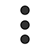

<!--
  Generated template for the SearchResultPage page.

  See http://ionicframework.com/docs/components/#navigation for more info on
  Ionic pages and navigation.
-->
<ion-header>

  <ion-navbar hideBackButton color="light">
    <div style="display: flex; align-items: center; background-color:white;">
      <span>
        <a (click)="onBack()">
          <!--  -->
          <ion-icon name='arrow-back' style="font-size: 400%;"></ion-icon>
        </a>
      </span>
      <div style="flex: 1; text-align: center;">
        {{profileName}}
      </div>
      <span>
        <a (click)="onNotificationPage()">
          <!--  -->
          <ion-icon name='chatboxes' style="font-size: 400%;"></ion-icon>
        </a>
      </span>
      <span style="width: 50px;text-align: center;">
        <a (click)="onClickMenu()">
          <!--  -->
          <ion-icon name='more' style="font-size: 400%; margin: 0 auto;"></ion-icon>
        </a>
      </span>
    </div>
  </ion-navbar>

</ion-header>


<ion-content padding class="main-content">
  <div>
    content
  </div>
  <div #map class="map-view" ></div>
</ion-content>

<ion-footer>
  <ion-item class="footer-item">
    <div class="footer-image" item-left>
      
    </div>
    <div class="footer-content">
      <p class="item-title">
        {{profileName}}
      </p>
    </div>
    <ion-note class="item-time" item-right>
      <div>
        <button icon-only ion-button clear small class="del-button">
          <ion-icon name='heart' color="dark"></ion-icon>
        </button>
      </div>
    </ion-note>
  </ion-item>
</ion-footer>